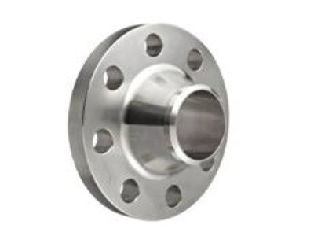

Flanges



M.S. & S.S. Male and Female Flange Manufacturer & Supplier – Darukhana, Mumbai · Since 1999
A male and female flange is a pair — one face carries a raised spigot, the other a recess of the same diameter, and the gasket sits down inside that recess where the wall stops it creeping outwards. On a plain raised face the gasket is held by nothing but friction and bolt load, so on an aggressive fluid, on a line that cycles hot and cold, or on a pump that shakes, it can walk out of the joint and begin to weep. The recess gives it a shoulder to sit against. We turn both halves together on the same setup at our Darukhana, Mumbai works, so the spigot and the recess agree with each other, and the recess depth is cut to the gasket you are actually going to use rather than to a catalogue figure. Supplied 15mm to 300mm NB in M.S. IS:2062 or SS 304 / 304L / 316 / 316L, drilled to whichever table or class you nominate.
It is a joint made of two dissimilar faces that fit into one another. One flange is turned with a spigot standing proud of its face. Its partner is turned with a recess of the same diameter, cut a shade deeper than the spigot stands tall. Bolt the two together and the spigot enters the recess; the space left between them is where the gasket lives, trapped all the way round its outside edge by the recess wall.
Everything the joint is good at follows from that one detail:
A male half and a female half are only useful together, and only if their figures agree. We turn the two on the same setup so the spigot and the recess match. Quote your quantity in pairs — ten pairs is ten male plus ten female. If you buy the male from one supplier and the female from another, the odds are the recess will be a little shallow or a little wide, and the joint will fight you when you pull it up.
The male and the female are turned in the same batch on the same machine, so the spigot and the recess agree and the pair is marked as a set.
Tell us the gasket sheet you use and the recess depth is machined to it, instead of you shimming or double-gasketing on site to make up a gap.
M.S. IS:2062 for general service, SS 304, 304L, 316 and 316L where the fluid attacks steel or the joint is opened often.
Delivered across Mumbai and Maharashtra, despatched to South India and the rest of the country, and exported through Nhava Sheva.
There are five things people mean when they ask for a male and female flange: the male half, the female half, the small variant (SMF), the large variant (LMF), and the narrower tongue-and-groove version. They are all the same idea — a projection landing in a recess — and they differ only in how wide that projection is and how tightly it holds the gasket. Because they are cut into the flange face rather than being separate items, any of them can be put on a plate, a hub or a weld-neck blank. Tell us which one you want, or send the joint you are matching.
| Sub-Category | Trade Code | What Is Different | Usually Specified For |
|---|---|---|---|
| Male Face Flange | M | Spigot turned proud of the face, sized to enter its partner’s recess | One half of every pair — commonly the pipe or pump side |
| Female Face Flange | F | Recess bored into the face; its wall holds the gasket on the outside edge | The other half of the pair — the side the gasket is fitted into |
| Small Male & Female | SMF | Spigot and recess turned to a diameter well inside the bolt circle | Harder gasket materials, where a narrow band and higher seating stress are wanted |
| Large Male & Female | LMF | Spigot and recess taken out close to the full face diameter | The common industrial choice — wide seating with soft sheet gaskets |
| Tongue & Groove | T&G (spigot & recess) | Narrow raised ring against a narrow channel; gasket confined inside and outside | Costly or hazardous fluids where the gasket must not shift at all |
The half with the spigot. Its outside diameter is turned to a close fit in the female recess and its height is set a little under the recess depth so the gasket, not the metal, takes the bolt load. Usually put on the side that stays put — the pump, the vessel, the fixed header.
The half with the recess. The gasket drops in and sits against the recess wall, which is what stops it creeping out under pressure. Order the depth to suit your gasket thickness — too deep and the faces meet metal to metal before the gasket is compressed.
The spigot and recess are turned to a smaller diameter, so the same bolt load is carried by a narrower ring of gasket. That raises the seating stress, which is what you want with a stiff gasket material or where the fluid is trying hard to get out. Uses less gasket sheet as well.
The spigot and recess run out close to the full face, giving a broad seating band. The usual choice for soft compressed-fibre, rubber-bonded and PTFE sheet, and the more forgiving of the two if your bolt torque is not tightly controlled on site.
Instead of a broad step, a narrow ring stands proud of one face and a matching channel is cut in the other. The gasket is then boxed in on both edges, which is about as positive as a soft gasket joint gets. It costs more to machine and the channel has to be cleaned out properly at every re-make.
Most male and female work reaches us as a sketch or a photograph of an existing joint rather than a standard code. Send the flange outside diameter, the bolt pitch circle and hole size, the spigot diameter and height, the recess diameter and depth, and the gasket you intend to use, and we will turn it.
The facing and the drilling are two separate decisions. The male spigot or female recess is machined onto a flange blank; the blank’s outside diameter, bolt pitch circle diameter, number of holes, hole diameter and thickness come from whichever table or class you nominate. Below is our Table E drilling for the 15mm to 300mm NB range these flanges are normally made in. Use it to check that the flange will bolt to what is already on the line.
You will notice there are no spigot or recess figures in the table, and that is deliberate. Those two dimensions depend on the gasket you are going to fit, and in Indian practice they are as often set by the joint already in service as by any published chart. Send us the gasket thickness, or the flange you are matching, and we will turn the spigot and recess to it and confirm the figures back to you before we cut.
| NB Size | Flange OD (mm) | Bolt PCD (mm) | No. of Bolts | Hole Dia (mm) | Bolt Size | Thickness (mm) |
|---|---|---|---|---|---|---|
| 15mm | 95 | 65 | 4 | 14 | M12 | 12 |
| 20mm | 105 | 75 | 4 | 14 | M12 | 14 |
| 25mm | 115 | 85 | 4 | 14 | M12 | 14 |
| 32mm | 140 | 100 | 4 | 18 | M16 | 16 |
| 40mm | 150 | 110 | 4 | 18 | M16 | 16 |
| 50mm | 165 | 125 | 4 | 18 | M16 | 16 |
| 65mm | 185 | 145 | 4 | 18 | M16 | 18 |
| 80mm | 200 | 160 | 8 | 18 | M16 | 18 |
| 100mm | 220 | 180 | 8 | 18 | M16 | 18 |
| 125mm | 250 | 210 | 8 | 18 | M16 | 20 |
| 150mm | 285 | 240 | 8 | 22 | M20 | 20 |
| 200mm | 340 | 295 | 8 | 22 | M20 | 22 |
| 250mm | 395 | 350 | 12 | 22 | M20 | 24 |
| 300mm | 445 | 400 | 12 | 22 | M20 | 24 |
Check these figures against your own drawing or the flange already on the line before you release an order. Ask on +91 99220 47887 and we will confirm the drilling and the facing for your size in writing.
Nobody machines a male and female face for an ordinary water line. It costs more than a plain raised face, so it is specified where a gasket moving would be expensive, dirty or dangerous. These are the jobs it turns up on most often in the enquiries we get.
The staple use. Where a gasket creeping out means a leak of something you do not want on the floor, the recess wall gives it nowhere to go. Usually asked for in stainless, and usually alongside a specified gasket sheet.
A gasket that has crept out of the joint leaves a crevice, and a crevice is a place for product to sit. The contained gasket keeps the bore profile clean, which is why SS 316L pairs go out to formulation and dairy plants.
Soft PTFE and graphite gaskets extrude readily under load. Confining them in a recess is the difference between a joint that holds for a year and one that starts to seep in a month. Common on ETP and pickling lines around Mumbai and Taloja.
Housings that are opened for cleaning every few weeks. The recess relocates the gasket in the same place each time, so the fitter is not chasing a leak after every re-make.
Steam, jacketed vessels, batch reactors. Every heat-up and cool-down works the gasket sideways; the recess absorbs that instead of letting the gasket ratchet its way out of the joint.
A large part of this work is a single flange to mate with something installed twenty years ago. Send the mating half, a rubbing of the face or a photograph with a scale in it, and we will cut a partner that fits it rather than a partner that fits a chart.
We supply from Darukhana, Mumbai to the whole of India and export to the Gulf. Local delivery across Mumbai, Navi Mumbai, Thane, Bhiwandi, Taloja, Ambernath, Pune, Nashik, Aurangabad and Nagpur. Regular despatch to South India — Chennai, Coimbatore, Madurai, Tiruchirappalli, Hosur, Bengaluru, Hyderabad, Visakhapatnam, Kochi and Mangaluru — and to Ahmedabad, Vadodara, Surat, Indore, Raipur, Jaipur, Delhi NCR, Kanpur, Kolkata, Bhubaneswar and Guwahati by the road or rail transport of your choice. Pairs go out strapped face to face so the machined seating is not damaged on the way. Export orders for Dubai and the wider UAE, Oman, Qatar, Kuwait and Saudi Arabia move through Nhava Sheva (JNPT) and Mumbai Port, with seaworthy packing, marking to your PO and the invoice and packing list your freight forwarder needs.
A male and female flange is a pair of flanges machined so that one face carries a raised projection and the other carries a matching recess, so the two faces locate into each other as the joint is bolted up. The male half has a spigot turned on its face; the female half has a recess of the same diameter and a slightly greater depth. The gasket sits inside that recess and is held on its outside diameter by the recess wall, which is why the joint is chosen where a gasket must not be allowed to creep or blow out. Both halves are always machined and supplied together as a matched pair.
The difference is the diameter of the male spigot. On a large male and female flange the projection runs out close to the full raised-face diameter, giving a wide gasket seating; on a small male and female flange it is turned to a smaller diameter inside the bolt circle, so the bolt load is concentrated on a narrower band and the seating stress is higher, which suits harder gasket materials. The two trade codes are used loosely in India, so give us the spigot outside diameter and the recess depth you want, or send the drawing.
On a male and female flange the whole raised face is either a projection or a recess, so the gasket is confined on its outer edge only. On a tongue and groove flange a narrow ring is raised on one face and a matching narrow channel is cut in the other, so the gasket is confined on both its inner and its outer edge. Tongue and groove holds the gasket more positively but costs more to machine and is harder to clean out on site. Both are made here. Specify which you need, because the two do not mate with one another.
Yes. One male and one female for every joint, machined together to the same figures. The spigot diameter of the male and the recess diameter of the female have to agree within a few tenths of a millimetre, so they are turned as a set on the same setup. Order in pairs: ten pairs means ten male plus ten female. Mixing a male half from one supplier with a female half from another is the usual reason a joint will not pull up square.
A gasket cut to the recess diameter, not a full-face gasket. The recess sets the outside diameter of the gasket, so a full-face gasket cut to the flange outside diameter will not drop in and will foul the spigot. Compressed fibre, PTFE, graphite and rubber-bonded sheet are all used, generally 1.5mm to 3mm thick depending on the recess depth. Tell us the gasket you intend to use and the recess depth is machined to suit it.
15mm NB to 300mm NB as standard, in M.S. IS:2062 and in SS 304, 304L, 316 and 316L. Larger diameters are machined to your drawing. The male or female face is turned onto a flange blank, so the outside diameter, bolt pitch circle, hole size and thickness follow whichever table or class you nominate, whether that is Table D, E, F or H or an ASME B16.5 class.
The facing is one thing and the drilling is another. The male or female facing is machined onto a blank whose outside diameter, bolt pitch circle diameter, number of holes, hole diameter and thickness come from the table or class you specify. The Table E figures for 15mm to 300mm NB are published on this page. Table D, Table F, Table H and the ASME B16.5 class charts are sent on request.
Yes. SS 304, 304L, 316 and 316L as well as M.S. IS:2062. Stainless is asked for where the fluid attacks mild steel, or where a joint is opened repeatedly and the faces must not rust together. It is machined the same way, but the material cost is several times that of mild steel, so send the grade with your enquiry and the quotation will reflect it.
Because the recess wall stops the gasket moving. On a plain raised face the gasket is held by friction and bolt load alone, so under pressure, thermal cycling or vibration it can creep outward and begin to weep. The recess gives the gasket a positive shoulder to sit against. That is why the joint is specified on lines carrying aggressive or costly fluids, on lines where a leak is a safety matter, and on pumps and vessels whose flanges are broken open often.
Every flange is stamped with the size, the table or class, the grade and the heat or lot reference, and the male and female halves are marked as a set so the store does not separate them. Pairs are strapped face to face with the seating protected, because a dented spigot or a scored recess will leak. Machined faces on mild steel are given a rust preventative. Export consignments go in wooden cases marked to your purchase order.
Send the size in NB, the table or class for the drilling, whether you want plain male and female, SMF, LMF or tongue and groove, the gasket thickness, the grade and the quantity in pairs. WhatsApp +91 99220 47887 or email sales.isengineeringco@gmail.com. A drawing, or even a photograph of the joint you are matching, is enough. We are at Gala No 10, Plot No 255, Mehta Lane, Kolsa Bunder, Darukhana, Rey Road, Mumbai 400010, open Monday to Saturday, 9:00 to 18:30.
